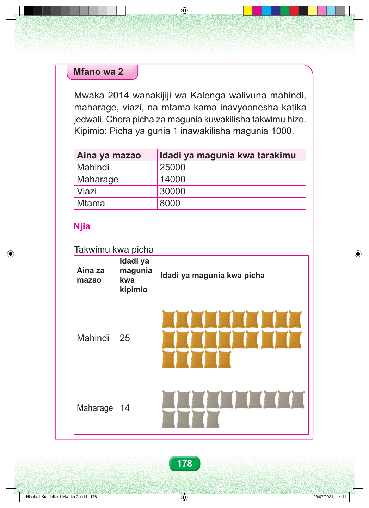

Mfano wa pili Mwaka 2014 wanakijiji wa Kalenga walivuna mahindi, maharage, viazi, na mtama kama inavyoonesha katika jedwali. Chora picha za magunia kuwakilisha takwimu hizo. Kipimio: picha moja ya gunia inawakilisha magunia elfu moja. Jedwali lina aina ya zao na idadi ya magunia kwa tarakimu. Mahindi yana magunia elfu ishirini na tano. Maharage yana magunia elfu kumi na nne. Viazi vina magunia elfu thelathini. Mtama una magunia elfu nane. Mahindi yana magunia elfu ishirini na tano, maharage yana magunia elfu kumi na nne, viazi vina magunia elfu thelathini, na mtama una magunia elfu nane. Kila picha moja ya gunia inawakilisha magunia elfu moja. Njia Takwimu kwa picha Idadi ya Aina za magunia Idadi ya magunia kwa picha mazao kwa kipimio Mahindi yana picha ishirini na tano za magunia. Picha hizo zinawakilisha magunia elfu ishirini na tano. Maharage yana picha kumi na nne za magunia. Picha hizo zinawakilisha magunia elfu kumi na nne. 178 Hisabati Kundirika 1 Mwaka 2.indd 178 23/07/2021 14:44